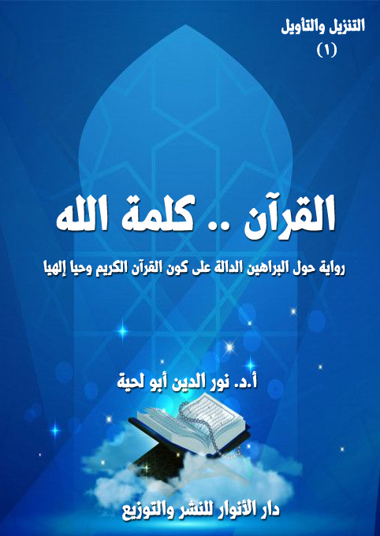
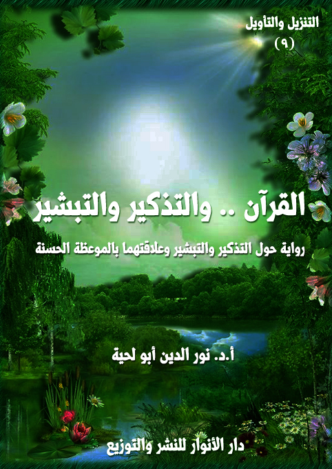
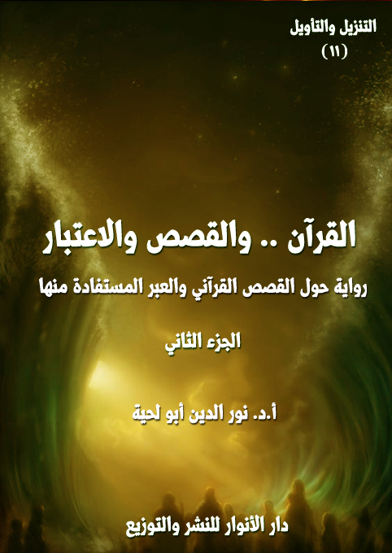

الكتاب: القرآن.. كلمة الله
الوصف: رواية حول البراهين الدالة على كون القرآن الكريم وحيا إلهيا
السلسلة: التنزيل والتأويل
المؤلف: أ. د. نور الدين أبو لحية
الناشر: دار الأنوار للنشر والتوزيع
الطبعة: الأولى، 1442 هـ
عدد الصفحات: 565
للمطالعة: هنا
لمطالعة الكتاب من تطبيق مؤلفاتي المجاني وهو أحسن وأيسر: هنا

يتناول هذا الكتاب ما ورد في القرآن الكريم حول البراهين الدالة على كونه وحيا وتنزيلا إلهيا خالصا، وقد استعملنا فيه أنواع التأويل المختلفة، سواء التأويل الأثري أو التدبري أو الواقعي أو العملي.
وقد رأينا أن البراهين القرآنية على كون القرآن الكريم وحيا إليها، يمكن حصرها في في أربعة براهين كبرى:
أولها: ما ورد في القرآن الكريم من شهادة الله تعالى بكونه وحيا إلهيا خالصا، وهو يستند إلى برهانين آخرين، مدعمين بكل أدلة العقل والنقل: برهان العناية، وبرهان الهداية.
ثانيها ـ ما ورد في القرآن الكريم من الإخبار عن شهادات الأنبياء عليهم السلام وبشاراتهم بالرسالة الخاتمة، وبالوحي المرتبط بها، وأن أهل الكتاب يعلمون ذلك، وهو ما يدعمه التأويل الواقعي؛ ولذلك رجعنا إلى ما ورد في الكتاب المقدس مما يدل على ذلك.
ثالثها: ما ورد في القرآن الكريم مما يرتبط برسول الله صلى الله عليه وآله وسلم والذي يدل البحث الواقعي والتدبري فيه إلى استحالة كون القرآن الكريم من تأليفه.
رابعا ـ ما ورد في القرآن الكريم مما يرتبط بشهادة الخبراء، وقد جمعنا فيه أكثر ما ورد في الكتب المتخصصة من الشهادات والوثائق والأدلة المختلفة، والتي تتحدث عما تطلق عليه [وجوه إعجاز القرآن الكريم]، أو مظاهره.
الكتاب: القرآن.. والبيان الشافي
الوصف: رواية حول لغة القرآن الكريم وخصائص نظمه وأسلوبه وكلماته
السلسلة: التنزيل والتأويل
المؤلف: أ. أ.د. نور الدين أبو لحية
الناشر: دار الأنوار للنشر والتوزيع
الطبعة: الأولى، 1442 هـ
عدد الصفحات: 1026
لمطالعة الجزء الأول: هنا
لمطالعة الجزء الثاني: هنا
لمطالعة الكتاب من تطبيق مؤلفاتي المجاني وهو أحسن وأيسر: هنا

التعريف بالكتاب
يحاول هذا الكتاب أن يستوعب ويُلخص ـ من غير إخلال ـ كل ما ورد في التراث الإسلامي من البحوث المرتبطة بالبيان القرآني، مع تبسيطها وتيسيرها وإبعاد الحشو عنها والجمع بين المدارس المختلفة في ذلك، ليكون مقدمة أساسية لفهم القرآن الكريم، وتدبر معانيه، ولذلك جعلناه الجزء الثاني من هذه السلسلة، بعد الجزء الذي ذكرنا فيه البراهين الدالة على ربانية القرآن، وكونه كلاما إلهيا.
والسبب الذي جعلنا نعطي لهذا الجانب الريادة، قبل سائر البحوث والمعاني المرتبطة بالقرآن الكريم، يرجع إلى أمور منها أن المعارف المرتبطة بالبيان القرآني تعتبر مفاتيح أساسية للتعامل معه، وفهمه واستنباط الحقائق والقيم والمعارف المختلفة منه.
ومنها أن هذه المعارف لها دور كبير في تحقيق تذوق الأسلوب القرآني وجماله، وهو ما يجعل ما يطلق عليه [الإعجاز البياني] عاما لكل العصور، بل شاملا لكل الناس.
ومنها أن أكثر الإشكالات التي وقعت في التاريخ والتراث والواقع سببها سوء الفهم للغة القرآن الكريم وتعابيره؛ فكل الانحرافات التي طالت العقيدة في الله سببها عدم مراعاة ما ورد في اللغة العربية التي جاء بها القرآن الكريم من المجاز والاستعارة والكناية والمشاكلة ونحوها.. وهكذا في كل الجوانب الأخرى.
ومنها أن أكثر الإشكالات والشبهات التي يثيرها من يطلقون على أنفسهم لقب [الحداثيين] أو [التنويريين] أو [القرآنيين] مرتبطة بالتعامل الخاطئ مع اللغة القرآنية، حيث يحملونها أحيانا كثيرة ما لا تحتمل، ولذلك كان التعرف على البيان القرآني ضروريا لمواجهة هذه التحريفات.
الكتاب: القرآن.. وتحريف الغالين
الوصف: رواية حول الدعوة للتعامل المقاصدي مع القرآن الكريم
السلسلة: التنزيل والتأويل
المؤلف: أ. د. نور الدين أبو لحية
الناشر: دار الأنوار للنشر والتوزيع
الطبعة: الأولى، 1443 هـ
عدد الصفحات: 1200
لمطالعة الجزء الأول: هنا
لمطالعة الجزء الثاني: هنا

هذا الكتاب هو الجزء الأول من أجزاء ثلاثة من هذه السلسلة تحاول أن تصحح الأخطاء الكبرى التي وقعت أثناء التعامل مع القرآن الكريم، وهي التي أشار إليها الحديث المعروف المشهور، وهو قول رسول الله صلى الله عليه وآله وسلم: (يحمل هذا العلم من كل خلف عدوله، ينفون عنه تحريف الغالين، وانتحال المبطلين، وتأويل الجاهلين)
وبناء على هذا؛ فإن هذا الجزء يعالج المبالغات والغلو الذي ارتبط ببعض العلوم القرآنية، أو الفهوم المتعلقة به، والتي صرفت عن التدبر الحقيقي للقرآن الكريم، وجعلت من أولئك الغلاة، مثل الذي يهتم بالقشر أكثر من اللباب، وبالأجزاء أكثر من الكل.
ولذلك؛ فهو لا يدعو لطرح تلك العلوم أو الفهوم طرحا كليا، وإنما يدعو إلى تصحيحها، ونفي الغلو عنها، ووضعها في محالها المناسبة، حتى لا تكون سببا يصرف عن تدبر القرآن الكريم، أو يؤثر في فاعليته في الواقع.
وقد رأينا أنه يمكن انحصار تلك المبالغات في سبعة قضايا وعلوم كبرى، هي: الرسم والإملاء .. والتجويد والقراءات .. وأسباب النزول .. ومحال النزول .. ومصاديق التنزيل، أو ما يطلق عليه [الجري والتطبيق] .. والناسخ والمنسوخ .. وعقبات التأويل، وقد تناولنا فيه سبع عقبات كبرى، هي: عقبة الفضول، وعقبة الخرافة، وعقبة الوهم، وعقبة المحدودية، وعقبة الحرفية، وعقبة الأهواء، وعقبة الدجل.
الكتاب: القرآن.. وانتحال المبطلين
الوصف: رواية حول الشبهات المثارة على القرآن الكريم والرد عليها
السلسلة: التنزيل والتأويل
المؤلف: أ. د. نور الدين أبو لحية
الناشر: دار الأنوار للنشر والتوزيع
الطبعة: الأولى، 1443 هـ
عدد الصفحات: 1058
لمطالعة الجزء الأول: هنا
لمطالعة الجزء الثاني: هنا

هذا الكتاب هو المقدمة الضرورة الرابعة لهذه السلسلة، ويتناول القسم الثاني من أقسام المنحرفين عن القرآن الكريم، وهو القسم الذي سماه رسول الله صلى الله عليه وآله وسلم [انتحال المبطلين]
ومن خلال تحليل ذلك التعبير النبوي المقدس، رأينا أن المقصود منه تلك الجهات التي تريد نشر الباطل، وتشويه الحق، لا بالمواجهة المباشرة، وإنما بالانتحال، وأصناف الحيل.
وقد رأينا من خلال استقرائنا للواقع أن ذلك الانتحال قد تم من طرف أربع جهات، أولها وأسبقها من يطلق عليهم لقب [الحشوية]، وهم أولئك الرواة والمدلسين الذين امتلأت بهم كتب الحديث والتفسير، والذين كان لهم دور كبير في نشر الخرافة والدجل والشعوذة وتشويه الحقائق والقيم القرآنية.
وأما الجهة الثانية؛ فيمثلها من أطلقنا عليهم لقب [الكشفية]، وهم أولئك الذين اعتبروا الكشف والإلهام المجرد أداة من أدوات تأويل القرآن الكريم وتفسيره وفهمه، من غير مراعاة لأي ضابط أو قانون.
وأما الجهة الثالثة؛ فيمثلها من أطلقنا عليهم لقب [المشككين]، ونقصد بهم كل من حاول أن يشكك في القرآن الكريم، ابتداء من السابقين من المعاصرين لرسول الله صلى الله عليه وآله وسلم إلى المبشرين والمستشرقين والحداثيين وغيرهم.
وأما الجهة الرابعة؛ فيمثلها من أطلقنا عليهم لقب [المبدلين]، ونقصد بهم كل الذين حاولوا أن ينحرفوا بالقرآن الكريم عن معانيه الظاهرة الواضحة التي فهمها المتقدمون والمتأخرون إلى معاني بديلة، متأثرين في ذلك بموجة الحداثة الغربية ومناهجها المختلفة، ولذلك تعاملوا مع القرآن الكريم، مثلما تعامل حداثيو الغرب مع الكتاب المقدس، من غير أن يراعوا الفوارق بين الكتابين.
الكتاب: القرآن.. وتأويل الجاهلين
الوصف: رواية حول كبرى التأويلات المنحرفة والردود عليها
السلسلة: التنزيل والتأويل
المؤلف: أ. د. نور الدين أبو لحية
الناشر: دار الأنوار للنشر والتوزيع
الطبعة: الأولى، 1443 هـ
عدد الصفحات: 1224
لمطالعة الجزء الأول: هنا
لمطالعة الجزء الثاني: هنا

هذا الكتاب هو المقدمة الخامسة لهذه السلسلة، ويتناول القسم الثالث من أقسام المنحرفين عن القرآن الكريم، وهو القسم الذي سماه رسول الله صلى الله عليه وآله وسلم [تأويل الجاهلين]
ومن خلال تحليل ذلك التعبير النبوي المقدس، رأينا أن المقصود منه تلك الجهات التي لا يقتصر تأويلها على الانحراف في فهم القرآن الكريم فقط، بل له تأثيره الواقعي أيضا، وهو ما عبر عنه قوله تعالى: {ابْتِغَاءَ الْفِتْنَةِ} [آل عمران: 7]، والتي يمكن أن تشمل الدين، ويمكن أن تشمل الدنيا.
ومع كثرة التأويلات المنحرفة عن التنزيل، والتي تكاد تشمل كل آية من القرآن الكريم إلا أننا وجدنا من خلال تطبيق ما أسميناه [التأويل الواقعي] أن من يُطلق عليهم لقب [السلفية]، أو [أهل الحديث]، أو [الوهابية]، وغيرها من الألقاب، هم أجدر الناس بهذا النوع من التأويل.
ولذلك نراهم يخالفون الأمة جميعا وبمدارسها المختلفة في تلك التأويلات، والتي لم تقتصر على الجانب النظري فقط، بل تعدته إلى إحداث فتن كثيرة في الواقع.
وقد تجلت في بدايتها بتكفير الأمة من خلال اتهامها بالتعطيل والجهمية، نتيجة تنزيهها لله تعالى عن الجسمية ولوازمها.
ثم ترقت إلى ما حصل في عهد الشيخ محمد بن عبد الوهاب من تأويل كل الآيات الواردة في المشركين وتطبيقها على المسلمين بجميع مدارسهم، وعدم الاكتفاء بذلك، بل محاربتهم وسفك دمائهم.
ثم ترقت إلى ما حصل في عصرنا من إنكار للحقائق العلمية القطعية، وتأويل الآيات القرآنية بخلاف ما يقتضيه العلم، مما جر فتنة كبيرة لا نزال نعاني آثارها.
ومثل ذلك ما حصل في كل تاريخ هذه الطائفة من تشويه للأنبياء عليهم السلام، وتفسير ما ورد في القرآن الكريم من المتشابه في شأنهم بالروايات الإسرائيلية، وبذلك شوهوا القيم النبيلة التي ضرب الله تعالى لها الأمثال بتلك القصص التي أوردها.
الكتاب: القرآن.. والهداية الشاملة
الوصف: رواية حول مواضيع القرآن الكريم ومقاصده وعلاقتها بالهداية
السلسلة: التنزيل والتأويل
المؤلف: أ. د. نور الدين أبو لحية
الناشر: دار الأنوار للنشر والتوزيع
الطبعة: الأولى، 1443 هـ
عدد الصفحات: 1253
لمطالعة الجزء الأول: هنا
لمطالعة الجزء الثاني: هنا
لمطالعة الكتاب من تطبيق مؤلفاتي المجاني وهو أحسن وأيسر: هنا

هذا الكتاب هو المقدمة السادسة لهذه السلسلة، ويتناول الخاصية الكبرى من خصائص القرآن الكريم، خاصية الهداية، التي نص عليها قوله تعالى: ﴿ذَلِكَ الْكِتَابُ لَا رَيْبَ فِيهِ هُدًى لِلْمُتَّقِينَ﴾ [البقرة: 2]، وقد رأينا من خلال استقراء ما ورد في القرآن الكريم حولها أنها تتضمن أربعة معان كبرى:
أولها: الأسس التي تقوم عليها الهداية، والتي لا يمكن أن تتحقق من دونها، وقد أشارت إليها كل الآيات التي تذكر الهداية القرآنية، فهي تقصرها على من لم تحل بينهم وبينها الحجب، وتجعلها خالصة لمن وفروا لأنفسهم الأهلية والقابلية لها.
ثانيها: الهداية للحقائق الكبرى، ابتداء من معرفة الله وانتهاء بمعرفة الكون والحياة والإنسان والمعاد وكل العوالم التي ذُكرت في القرآن الكريم، وكيفية التعامل معها.
ثالثها: الهداية للقيم والوظائف التي كُلف الإنسان بمراعاتها، والتي لا يمكن التعرف الدقيق عليها من دون هداية إلهية.
رابعها: غايات الهداية، ذلك أن لكل طريق غايات تحدد مساره، وتجعل السائر فيه أكثر اندفاعا ونشاطا وحماسة.
وبناء على هذا كان هذا الكتاب بجزئية عبارة عن تفسير موضوعي مختصر لمواضيع القرآن الكريم الكبرى جميعا، وقد اكتفينا فيه بذكر المواضيع القرآنية، وما ورد فيها من الآيات الكريمة، مع انتقاء بعضها وذكر تفسيره المختصر الذي يحدد معناه بسهولة ويسر.
وقد صببنا كل ذلك في رواية يرحل فيها المؤلف إلى المستقبل بعد أن تعم الهداية الأرض جميعا، وهناك يستمع للكثير ممن يحدثه عن تلك المعاني، ويبسطها بقدر الإمكان، وفي أجواء خاصة تتناسب مع الآيات الكريمة المراد الحديث عنها.
الكتاب: القرآن.. والعزاء والشفاء
الوصف: رواية حول العزاء القرآني للنفوس المتألمة
السلسلة: التنزيل والتأويل
المؤلف: أ. د. نور الدين أبو لحية
الناشر: دار الأنوار للنشر والتوزيع
الطبعة: الأولى، 1443 هـ
عدد الصفحات: 561
للمطالعة: هنا
ISBN: 978-620-4-72127-9
لمطالعة الكتاب من تطبيق مؤلفاتي المجاني وهو أحسن وأيسر: هنا
هذا الكتاب هو المقدمة السابعة لهذه السلسلة، ويتناول الخاصية الثانية من خصائص القرآن الكريم، خاصية العزاء والسلوى وشفاء ما في الأنفس والصدور، والتي يشير إليها قوله تعالى: ﴿وَنُنَزِّلُ مِنَ الْقُرْآنِ مَا هُوَ شِفَاءٌ وَرَحْمَةٌ لِلْمُؤْمِنِينَ وَلَا يَزِيدُ الظَّالِمِينَ إِلَّا خَسَارًا﴾ [الإسراء: 82]، إضافة إلى أن الله تعالى يصف رسول الله صلى الله عليه وآله وسلم ورسالته بكونها رسالة بشارة، وكون رسول الله صلى الله عليه وآله وسلم مبشرا ورحمة للعالمين.. وهذا المعنى هو نفسه المعنى الذي يحمله العزاء والسلوى والشفاء.
وبناء على هذا حاولنا في هذه الرواية أن نحصي الآلام الكبرى التي تعتري النفوس، ثم الأدوية القرآنية التي تُعالج بها، مع تبسيطها وتيسيرها وتوضيحها بالمشاهد والشواهد التي تيسر التعامل معها.
وقد قسمنا الكتاب بحسب الآلام التي تعتري النفوس إلى خمسة أقسام، هي:
1. المتألمون، سواء كانوا مرضى، أو ممن فقدوا أحباءهم، وغيرهم.
2. الفقراء والمساكين الذين يتألمون بسبب فاقاتهم وحاجاتهم المادية.
3. المستضعفون الذين يتألمون بسبب ضعفهم وهوانهم وتسلط المتكبرين عليهم.
4.المخطئون الذين يتألمون بسبب أخطائهم، وقد يتوهمون أنها لا تُغفر.
5.المحبطون واليائسون والمكتئبون، والذين يتألمون بسبب كل ذلك.
وبما أن أمثال هذه المعاني تحتاج إلى المبلّغ والمبيّن الذي يستطيع أن يستعمل الأدوية القرآنية بطريقة صحيحة، فقد جعلنا بطل هذه الرواية هو من يقوم بذلك.. والرواية تحمل الكثير من المشاهد التي رآها تلميذ القرآن في رحلته إلى تلك البلاد التي عاين فيها أولئك المتألمين، وكيف تحولوا إلى سعداء بفعل تعليمات ومواعظ معلمهم الكاظم، والتي كان يستقيها من القرآن الكريم.
الكتاب: القرآن.. والحجج البالغة
الوصف: رواية حول الحقائق القرآنية العظمى والحجج الدالة عليها
السلسلة: التنزيل والتأويل
المؤلف: أ. د. نور الدين أبو لحية
الناشر: دار الأنوار للنشر والتوزيع
الطبعة: الأولى، 1444 هـ
عدد الصفحات: 679
للمطالعة: هنا
ISBN: 978-620-4-72146-0

هذا الكتاب هو المقدمة الثامنة لهذه السلسلة، ويتناول الخاصية الثالثة من خصائص القرآن الكريم، خاصية إقامة الحجة على المخالفين، وفي كل الشؤون، والتي نص عليها قوله تعالى: ﴿قُلْ فَلِلَّهِ الْحُجَّةُ الْبَالِغَةُ فَلَوْ شَاءَ لَهَدَاكُمْ أَجْمَعِينَ﴾ [الأنعام: 149]
وحجة الله البالغة هي التي تبلغ جميع العقول، وتستعمل جميع وسائل الوصول إليها، لتقطع عنها كل الأعذار، وتزيل عنها كل الشبهات، وتكشف عنها ما يحول بينها وبين التسليم للحق.
وهي التي استعملها المتكلمون من علماء العقائد خصوصا، وعبر العصور المختلفة، وإن كانوا قد جنحوا في بعض مباحثهم عن المنهج القرآني البسيط والعميق، والذي لا يتكلف البحث عما لا طاقة للعقول به.
ومن خلال استقرائنا لما ورد في القرآن الكريم من الحجج البالغة وجدناها تتوجه إلى سبعة أصناف من الناس، يوجدون في كل العصور، وإن اختلفت أسماؤهم أو ألقابهم أو المصطلحات الدالة عليهم.
وقد خصصنا كل صنف منهم بفصل خاص، وهم الغافلون، والملاحدة، والمشركون، والربوبيون، والدهريون، والمحرفون، والمعارضون.
الكتاب: القرآن.. والتذكير والتبشير
الوصف: رواية حول التذكير والتبشير وعلاقتهما بالموعظة الحسنة
السلسلة: التنزيل والتأويل
المؤلف: أ. د. نور الدين أبو لحية
الناشر: دار الأنوار للنشر والتوزيع
الطبعة: الأولى، 1444 هـ
عدد الصفحات: 666
للمطالعة: هنا
ISBN: 978-620-3-85901-0
لمطالعة الكتاب من تطبيق مؤلفاتي المجاني وهو أحسن وأيسر: هنا

هذا الكتاب هو المقدمة التاسعة لهذه السلسلة، ويتناول الخاصية الرابعة من خصائص القرآن الكريم، خاصية التذكير والتبشير، وهما من الخصائص المرتبطة بالموعظة الحسنة، والتي اعتبرها الله تعالى صفة من صفات القرآن الكريم، ووظيفة من وظائف الهداة والصالحين ابتداء من رسول الله صلى الله عليه وآله وسلم وغيره من الأنبياء عليهم السلام.
وهذه الخاصية مرتبطة بخاصية أخرى مكملة لها، وهي خاصية الإنذار والاعتبار، والتي خصصنا لها الكتاب العاشر من هذه السلسلة، ولذلك فإن هذين الكتابين منفصلين شكلا، متحدين موضوعا، لأنهما يشتركان في البحث في خاصية الموعظة الحسنة، وكيف تعامل معها القرآن الكريم.
وبناء على هذا، فقد حاولنا في هذا الكتاب أن نجمع بين ذكر النماذج المرتبطة بالتذكير والبشارة في القرآن الكريم مع التطبيق العملي لذلك من رسول الله صلى الله عليه وآله وسلم، وورثته من الهداة، ولذلك أدرجنا في أكثر المباحث والمطالب ما ورد من الأحاديث والآثار في كل مسألة نطرحها، مع اشتراط موافقة الأحاديث للقرآن الكريم.
الكتاب: القرآن.. والوعيد والإنذار
الوصف: رواية حول الوعيد والإنذار وعلاقتهما بالموعظة الحسنة
السلسلة: التنزيل والتأويل
المؤلف: أ. د. نور الدين أبو لحية
الناشر: دار الأنوار للنشر والتوزيع
الطبعة: الأولى، 1444 هـ
عدد الصفحات: 510
للمطالعة: هنا
ISBN: 978-620-3-85901-0
لمطالعة الكتاب من تطبيق مؤلفاتي المجاني وهو أحسن وأيسر: هنا
هذا الكتاب هو المقدمة العاشرة لهذه السلسلة، ويتناول الخاصية الخامسة من خصائص القرآن الكريم، خاصية الوعيد والإنذار، وهي من الخصائص المرتبطة بالموعظة الحسنة، والتي اعتبرها الله تعالى صفة من صفات القرآن الكريم، ووظيفة من وظائف الهداة والصالحين ابتداء من رسول الله صلى الله عليه وآله وسلم وغيره من الأنبياء عليهم السلام، ومن ورثهم من أئمة الهدى وأتباعهم من الصالحين.
وقد حاولنا أن نجمع في هذا الكتاب النماذج الكثيرة من الآيات الكريمة التي يرد فيها الوعيد والإنذار والتهديد، إما كمقاطع أو كآيات منفصلة، لنتعرف من خلالها على المنهج القرآني في الإنذار والوعيد، ليكون لنا في أسلوبه عبرة وأسوة.
وقد ضممنا إلى ما ورد في القرآن الكريم من الوعيد والإنذار الكثير من الأحاديث التي تفصل المعاني الواردة في الآيات الكريمة أو تؤكدها وتزيد في وضوحها، وذلك بناء على ما ذكرناه من محاولة ربط القرآن الكريم بالسنة المطهرة، قدر الإمكان، مع اشتراط أن تكون السنة موافقة للقرآن.
وقد جعلنا من الأهداف الكبرى للرواية، وخاصة بطابعها الفني، الرد على المرجئة القدامى والجدد، والذين استغلوا بعض المعاني القرآني المرتبطة برحمة الله الواسعة، ليلغوا ما ورد فيه من الوعيد والإنذار والتهديد.
الكتاب: القرآن.. والقصص والاعتبار ج2
الوصف: رواية حول القصص القرآني والعبرة المستفادة منها
السلسلة: التنزيل والتأويل
المؤلف: أ. د. نور الدين أبو لحية
الناشر: دار الأنوار للنشر والتوزيع
الطبعة: الأولى، 1444 هـ
عدد الصفحات: 496
لمطالعة الجزء الأول: هنا
لمطالعة الجزء الثاني: هنا
لمطالعة الكتاب من تطبيق مؤلفاتي المجاني وهو أحسن وأيسر: هنا
